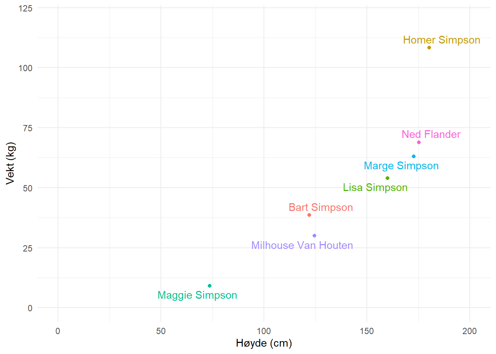
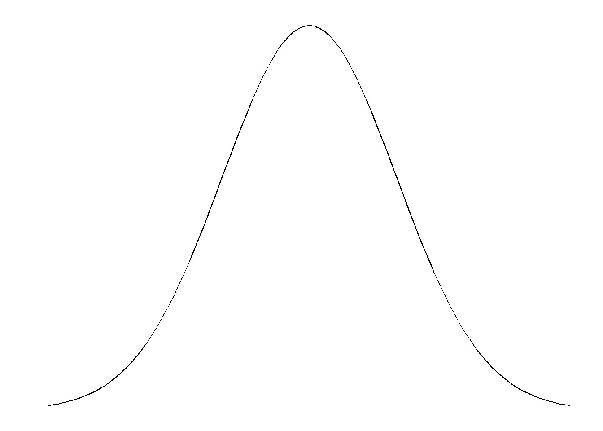
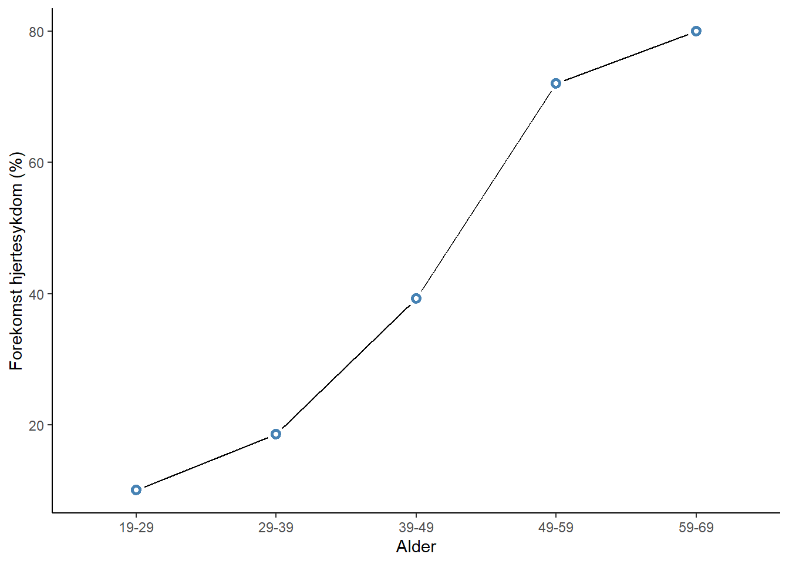

3 Statistisk samvariasjon i dataanalyse
Det å måle statistisk samvariasjon er sentralt i mye av den kvantitative forskningen. Som vi skal se så brukes forskjellige metoder for å undersøke samvariasjon, i flere ulike scenarioer. Det er nesten mulig å argumentere for at veldig mange forskningsspørsmål besvares ved hjelp av noen form av analyse av samvariasjon. For eksempel når vi ønsker å vite om:
- kjønn er av betydelse når man melder seg på til et turrenn
- maksimalt oksygenforbruk kan forutsi prestasjon i sykkel eller skiller seg mellom to grupper av syklister
- større muskelmasse og muskelstyrke er fordelaktig når man ønsker å leve lenge.
Alle disse spørsmålene, og lignende spørsmål besvares ved hjelp av statistiske modeller som måler noen form av samvariasjon mellom variabler. Som vi kan se i eksemplene over så kan variablene være av forskjellige typer (kontinuerlige, ordinale eller nominale). Datatypene gir noen begrensninger i hvilke verktøy vi kan bruke for å måle samvariasjon. I denne modulen skal vi snakke om teknikker som måler samvariasjon, så som regresjonsanalyse, analyse av varians og krysstabulering.
3.1 Regresjon
Regresjonsanalyse er en familie av teknikker for å måle samvariasjon, vanligvis starter vi med å beskrive regresjonsmodellen som en teknikk for å måle samvariasjonen mellom to variabler, en uavhengig og en avhengig variabel. Regresjonsmodellen kan også bli utvidet til å måle sammenhengen mellom flere uavhengige variabler og en avhengig variabel. I den enkleste formen kan vi faktisk bruke modellen for å studere en variabel. I en regresjonsmodell med to variabler, en avhengig og en uavhengig lager vi en modell som gir oss en matematisk formel for hvordan en variabel påvirker en annen. I denne enkle formen snakker vi om at den uavhengige variabelen påvirker den avhengige variabelen. Disse kan visualiseres i en to-dimensjonal figur (se Figur 3.1). På x-aksel setter vi den uavhengige variabelen og på y-aksel setter vi den avhengige variabelen.
I dette “systemet”, og med benevningene avhengig og uavhengig variabel sier vi noe om hvordan vi forestiller oss at variablene varierer sammen. Vi sier noe om at den uavhengige variabelen påvirker den avhengige. Modellen kan brukes for å lage prediksjoner om hvilken verdi den avhengige variabelen tar hvis vi bestemmer at den uavhengige variabelen skal ha en gitt verdi.
Til tross for at vi vet at flere variabler i mange fall påvirker en avhengig variabel kan vi bruke regresjonsmodellen for å estimere sammenhengen mellom et begrenset antall variabler. I filen som du finner her finnes data på kroppshøyde og vekt hos en gruppe (mer eller mindre kjente) individer. Ved å lage en tabell kan vi få et overblikk over dataene, men en figur eller matematisk modell kan vise sammenhengen mellom høyde og vekt bedre. Vi velger å sette høyde som uavhengig variabel og vekt som avhengig variabel. Alt annet like så kan vi tenke oss at hvis kroppshøyde øker så øker vekt, men øker vekt så trenger ikke høyde øke. Det finnes en logisk retning på sammenhengen mellom variablene.
Den visuelle sammenfatningen av dataene finner du under i Figur 3.1, her så kan vi allerede se en tendens i dataene. Individer som er høyere er også tyngre. En matematisk modell for denne sammenhengen kan brukes for å beskrive gjennomsnittet ved en gitt høyde, men hvor plasserer vi dette gjennomsnittet?
üìπ Forelesning: Intro til samvariasjon og regresjon.
En regresjonslinje kan beskrives med formelen \(y=m + k\times x\). Vi kjenner denne formelen fra matematikken og vi kan lese den som at \(y\) er lik skjæringspunktet (\(m\)) pluss \(k\) (stigningstall) enheter per hver enhets endring i \(x\). I statistikken bruker man ofte andre symboler for å beskrive skjæringspunkt og stigningstall. Den samme ekvasjonen kan se ut slik i statistikkboken: \(y=\beta_0 + \beta_1 \times x\). Hvor \(\beta_0\) skjæringspunktet og \(\beta_1\) er stigningstallet. Disse er koeffisienter som estimeres fra dataene. Når vi setter \(x=0\) faller \(\beta_1\) ut fra ekvasjonen og vi står igjen med \(y=\beta_0\), skjæringspunktet. For hver enhet forandring i \(x\) forandres \(y\) med \(\beta_1\).
For å bestemme hvilke verdier på \(\beta_0\) og \(\beta_1\) som best beskriver dataene kan vi starte med å plassere noen alternativer i vår figur. I Figur 3.2 finner vi fire mulige modeller (streker) som beskriver dataene. Den modell som beskriver dataene best er den som minimerer avstand fra modellen til de observerte verdiene (Figur 3.2 B). Avstanden fra observerte verdier til modellen estimeres ved å beregne den vertikale avstanden mellom modellens prediksjoner og de observerte verdiene (Figur 3.2 C).
üìπ Forelesning: Tilpassning av en regresjonsmodell.
En regresjonsmodell estimeres ved å minimere avstanden fra hver observasjon til dess respektive predikerte verdi. Teknisk sett så minimerer vi summen av avstanden i kvadrat. I figuren over har vi illustrerer dette gjennom å plotte alle modellene med “feilverdier” til hver observasjon. Når vi legger disse sammen blir det tydelig at den blå modellen ikke er særlig god. Den minimerer avstand til Homer Simpson bekostning av store feil til de andre observasjonene.
Et dataprogram som for eksempel Jamovi gjennomfører beregninger for oss og gir oss modellen hvor feilene er minimerte. Resultatene fra en tilpassing av en regresjonsmodell kan leses i en tabell hvor estimatene av skjæringspunkt og stigningstall vises. I eksemplet med kroppshøyde og vekt ser vi at stigningstallet er 0.73 kg. For hver cm økning i kroppshøyde øker vekt med 0.73 kg. Skjæringspunktet sier at vekten er -51 kg når kroppshøyde er 0. Dette er ikke en korrekt representasjon av virkeligheten så som vi kjenner den. Dette sier mer om hvordan vi sier at variablene varierer sammen enn om forholdet mellom kroppshøyde og vekt.
En regresjonsmodell fungerer best der hvor vi faktisk har data. En enkel regresjonsmodell begrenses også til rette linjer. Dette gjør at resultatene fra en slik analyse bør behandles med skepsis når vi kan gjøre antagelser om en ikke rett sammenheng og når modellen brukes for å predikere utenfor variasjonsvidden til dataene som bruktes til å lage modellen.
3.2 Fra regresjon til korrelasjon
üìπ Forelesning: Fra regresjon til korrelasjon.
I eksemplet over så vi en hvordan vi kan lage en matematisk modell for sammenhengen mellom to kontinuerlige variabler. Modellen gir oss muligheter til å predikere en avhengig variabel ved hjelp av en uavhengige variabel. Prediksjonen antyder at vi ser på sammenhengen som at den ene variablene (uavhengig) påvirker den andre (avhengig). Sammenhengen beskrives også med enheter som vi finner igjen i dataene, for eksempel så gav 1 cm forandring i høyde en estimert forskjell i vekt på 0.73 kg. Regresjonsanalysen gir oss altså mye informasjon som kan brukes til flere formål. Men modellen kan også forenkles.
Sammenhengen mellom to kontinuerlige variabler kan beskrives som en korrelasjonskoeffisient. Denne korrelasjonskoeffisienten beskriver sammenhengen mellom to variabler som et tall mellom -1 og +1 hvor estimat som nærmer seg -1 eller +1 indikerer en sterk korrelasjon og estimat som nærmer seg 0 indikerer en svak eller ingen korrelasjon (eller sammenheng).
Den kanskje vanligste måten å beskrive en korrelasjon på er ved hjelp av Pearson’s korrelasjonskoeffisient. Denne gis vanligvis symbolet R og noen eksempler finnes å se i Figur 3.3.
Korrelasjonskoeffisienten påvirkes ikke av rekkefølgen som vi gir variablene til dataprogrammet noe som er viktig for å tolke en regresjonsanalyse på en korrekt måte. Korrelasjonsanalysen og regresjonsanalysen påvirkes begge av ekstreme verdier og ikke linjere forhold mellom variabler, noe som kan gi oss feil inntrykk av dataene hvis vi bare tolker korrelasjonskoeffisienten (eller regresjonsmodellen). Når vi gjennomfører en korrelasjonsanalyse antar vi at dataene kan beskrives med en rett linje og at ingen sterkt influerende datapunkter finnes i datasettet. I figuren under (Figur 3.4) ser vi eksempel på når disse antagelsene ikke stemmer. Et enkelt datapunkt bidrar til å gi et bilde av en svak sammenheng mellom x og y, og i det andre eksemplet fanger en antatt rett sammenheng ikke opp en sterk, ikke-lineær samvariasjon mellom x og y.
3.3 Regresjon med en nominal eller ordinal uavhengig variabel
üìπ Forelesning: Regresjonsmodellen og alternative statistiske metoder.
Vi kan enkelt omformulere regresjonsmodellen gjennom å bruke en nominal eller ordinal variabel som uavhengig variabel. La oss si at vi ønsker å estimere sammenheng mellom alderskategoriene barn/voksen og vekt. I tabellen under (Tabell 3.1) har vi identifisert voksne og barn, og vi uttrykker dette som to forskjellige indikatorvariabler, også kallet dummyvariabler. En dummyvariabel kan ta to verdier, 0 og 1, og her kan vi forstå den ene som, voksen ja = 1/nei = 0, og den andre som, barn ja = 1/nei = 0. Vi trenger ikke begge variablene, men kodingen avgjør hvordan i tolker resultatene fra en regresjonsmodell.
| Høyde | Vekt | Navn | Barn | Voksen |
|---|---|---|---|---|
| 121.92 | 38.56 | Bart Simpson | 1 | 0 |
| 160.02 | 53.98 | Lisa Simpson | 1 | 0 |
| 180.34 | 108.40 | Homer Simpson | 0 | 1 |
| 172.72 | 63.05 | Marge Simpson | 0 | 1 |
| 73.66 | 9.07 | Maggie Simpson | 1 | 0 |
| 124.46 | 29.94 | Milhouse Van Houten | 1 | 0 |
| 175.26 | 68.95 | Ned Flander | 0 | 1 |
Da tilpassingen av modellen vil bli gjort ved at regresjonslinjen beskriver gjennomsnittet for hvert tall på \(x\) vil denne modellen beskrive skjæringspunktet som er gjennomsnittet når \(x=0\), altså for alderskategorien barn, når vi bruker indikatorvariabelen Voksen. Stigningstallet vil beskrive hvor mye \(y\) (vekt) øker når vi går fra 0 til 1 på \(x\)-variabelen. Bruker vi indikatorvariabelen Barn vil vi estimere gjennomsnittet hos voksne (når \(x=0\)) og forskjellen mellom vokse og barn som stigningstallet i modellen.
Her ser vi også en viktig poeng med sammenligninger i regresjonsanalyser. Når vi observerer data kan vi bruke regresjonsmodellen til å lage sammenligninger. Vi kan ved hjelp av \(x\)-variabelen sammenligne to kategorier, eller gjennomsnitt på \(y\) ved to forskjellige verdier på \(x\). Teknisk sett så kan vi ikke si “hvis vi øker \(x\) med 1 for et individ så vil dette individet få \(\beta_1\) enheter større \(y\)” da vi ikke har mulighet på gjennomføre en intervensjon på dette individet. Noen uavhengige variabler er ikke heller enkle å forandre (alder, kjønn, hårfarge osv.).
3.4 Flere uavhengige variabler, multippel regresjon
En regresjonsmodell kan ha flere uavhengige variabler som sammen forklarer en avhengig variabel. I en ligning kan dette se ut som
\[y=\beta_0 + \beta_1x_1 + \beta_2x_2 + ... + \beta_nx_n\]
Nå vi setter noen av de uavhengige variablene til noe annet enn 0 så gir vi koeffisientene betydelse for resultatet (\(y\)). I teorien kan vi ha veldig mange uavhengige variabler, men i praksis er dette noe som er vanskelig å motivere av statistisk og vitenskapelig hensyn (noe vi ikke går dypere inn på i dette emnet).
student_trening_1_2_3.csvI datasettet student_trening_1_2_3.csv finner vi variablene alder, kjønn og treningstimer (Figur 3.5). Vi ønsker å finne sammenhengen mellom variablene kjønn og alder (uavhengige variabler) og treningstimer (avhengig variabel). Modellen kan skrives som
\[\text{treningstimer} = \beta_0 + \beta_1\times\text{kjønn} + \beta_2\times\text{alder}\]
student_trening_1_2_3.csvEn figur som beskriver samvariasjonen mellom variablene finner du i Figur 3.6. Variablene alder og timer trening er av typen integer (heltall), jeg har derfor lagt til “jitter” som gjør det letter å se hvor vi finner flere observasjoner.
| Koeffisient | Estimat | Standardfeil |
|---|---|---|
β0 (Skjæringspunkt) |
6.02 | 0.76 |
β1 (Kjønn, kvinne = 0, mann = 1) |
1.51 | 0.25 |
β2 (Alder) |
−0.07 | 0.03 |
Når vi estimerer modellen får vi tall på \(\beta_0\), \(\beta_1\) og \(\beta_2\). Disse estimatene forteller oss om den gjennomsnittlige forskjellen mellom kjønn i treningstimer ved en gitt alder (\(\beta_1\)) og forskjellen i treningstimer når vi sammenligner for eksempel noen med alder 20 og noen med alder 21 (\(\beta_2\)) hos menn og kvinner (se Tabell 3.2). Vi kan si dette da dataprogrammet estimerer koeffisientene ved å minimere feilene (avstand fra predikerte til observerte verdier), akkurat som i eksemplene over med en avhengig variabel, men med forskjellen at vi her minimerer feilene i to dimensjoner (kjønn og alder). Noen sier at vi “kontrollerer” for kjønn når vi ser på effekten av alder, eller at vi “kontrollerer” for alder når vi ser på effekten av kjønn på treningstimer. Vi kan tenke oss at modellen gir et estimat av forskjellen mellom kjønn når vi holder variabelen alder likt mellom menn og kvinner. For menn og kvinner med samme alder er forskjellen i treningstimer \(\beta_1\).
Legg merke til at modellen inneholder en dummy-variabel for kjønn, vi trenger vanligvis ikke å lage denne, dette gjør statistikkprogrammet for oss. Dummy-variabelen tar verdien 0 når kjønn er kvinne og 1 når kjønn er mann.
Estimatet fra modellen over sier at menn trener 1.51 timer mer enn kvinner. Om vi sammenligner gjennomsnittlig treningstid mellom to etterpåfølgende år så finner vi at treningstiden synker med -0.07 timer per år. Hvis vi gjør denne analyses med en regresjonsmodell som ikke inneholde alder så ser vi at effekten av kjønn synker (Tabell 3.3). Gjør vi analysen uten variabelen kjønn påvirkes estimatet for sammenhengen mellom alder og treningstid (Tabell 3.4). Den justering som gjøres er en effekt av at alder ikke er fordelt likt mellom menn og kvinner. Når vi sammenligner menn og kvinner uten å “kontrollere” for alder sammenligner vi to grupper med forskjellige aldersprofiler. Da alder også viser sammenheng med treningstimer løper vi risken å til dels ikke lage en rettvis sammenligning. I den multipple regresjonsmodellen sier vi at effekten av alder er betinget effekten av kjønn (og omvendt).
| Koeffisient | Estimat | Standardfeil |
|---|---|---|
β0 (Skjæringspunkt) |
4.35 | 0.15 |
β1 (Kjønn, kvinne = 0, mann = 1) |
1.45 | 0.25 |
| Koeffisient | Estimat | Standardfeil |
|---|---|---|
β0 (Skjæringspunkt) |
6.09 | 0.78 |
β2 (Alder) |
−0.05 | 0.03 |
3.5 Antagelser og diagnostikk
Hver regresjonsmodell1 resulterer i et feilledd. Vi har tidligere konstatert at at den linje som best beskriver dataene er den linje som minimerer feilen fra modell til data. Feilene i modellen, også kalt residualene, kan brukes for å bedre forstå om modellen er en tilstrekkelig god representasjon av dataene. For at en modell skal anses representere de data den prøver å beskrive så må noen antagelser om modellen og dataene være oppfylt. Vi antar at feilleddet er symmetrisk fordelt og ligner en normalfordeling2. Vi antar også at variasjonen eller spredningen på feilledet er lik over hele datamaterialet, dette kalles homoskedastisitet (lik spredning). Vi antar også at, som tidligere blitt nevnt, at samvariasjon mellom variabler kan beskrives som lineært. Hvis vi har indikasjoner på at forholdet ikke er lineært så er ikke heller den rette linjen en god modell. Til dels kan vi bruke feilleddet for å se dette. Til sist så tenker vi oss at alle observasjoner, og dermed også feilleddet er uavhengige fra hverandre. Det siste betyr at vi ikke på en enkel måte kan bruke flere datapunkter fra de samme individene i en ordinær regresjonsmodell da datapunktene er beslektet.

3.6 Variansanalyse
Thrane (2020) tar opp variansanalyse som et verktøy for samvariasjon når den uavhengige variabelen er kategorisk og den avhengige variabelen er numerisk kontinuerlig. I praksis stiller vi spørsmål om en avhengig variabel variere sammen med en kategorisk, dette undersøkes ved å se på gjennomsnitt i hver gruppe og differenser mellom de. Teknisk sett så er variansanalyse en type regresjonsmodell (regresjonsmodellen er fleksibel) hvor vi undersøker hvordan dataene varierer (varians) mellom og innad kategorier/grupper, derav navnet variansanalys (Analysis of Variance, ANOVA på engelsk).
3.7 Krysstabulering
I ANOVA og ordinær regresjonsanalyse kan vi ikke ha en kategorisk avhengig variabel (da kreves mer avanserte modeller, se under). Nå vi ønsker å se på sammenhengen mellom to kategoriske variabler kan vi isteden bruke krysstabulering. Likt ANOVA og regresjonsmodellen kan krysstabuleringen knyttes mot statistiske test, vi vil snakke mer om disse senere i emnet.
En krysstabulering innebærer at vi deler opp dataene på to kategorier, vi kan reprodusere tabell 3.5 fra Thrane (2020) hvor vi undersøker samvariasjon mellom kjønn og medlemskap i et idrettslag. I Figur 3.8 er størrelsen på feltene i proporsjon til antallet observasjoner i hver kombinasjon av kategoriene kjønn og medlemskap i idrettslag. Prosenttall i hvert felt indikerer prosentfordeling innad kjønn mellom kategoriene medlem/ikke medlem.
Thrane, Christer. 2020. Statistisk Dataanalyse På 1-2-3. Cappelen Damm.
Krysstabuleringen er en effektiv teknikk for å få overblikk over mulig samvariasjon mellom to kategorier. Når vi har en kategorisk variabel som avhengig variabel og flere uavhengige variabler som vi ønsker å bruke som kontrollvariabler kreves det mer avanserte metoder. Vi må vende tilbake til regresjonsmodellen.
3.8 Generaliserte lineære modeller
I regresjonsmodellene som ble presentert i tidligere avsnitt antok vi for eksempel at feilleddet var symmetrisk fordelt kring 0. Dette er en gyldig antagelse når vi prøver å forklare en kontinuerlig avhengig variabel som alder eller treningstid. Når den avhengige variabelen kan ta enten verdien 0 eller 1 kan vi ikke si att antakelsen om et normalfordelt feilledd stemmer. En binær variabel (0/1) kan for eksempel beskrive hvis en person har en sykdom eller er død, hvis et fotball-lag vinner en kamp eller noen bruker narkotiske stoffer, osv. Når vi ønsker å forstå disse variablene ved hjelp av en regresjonsmodell må vi forandre modellen for å unngå å bli lurt av dataene.
Alder kan tenkes være en variabel som påvirker (direkte eller indirekte) forekomst av hjertesykdom3. Når vi skal prøve oss på å beskrive sammenhengen mellom disse to variablene kan vi starte med å gjøre en figur hvor alder settes på x-aksel og sykdomsstatus (forekomst av hjertesykdom = 1, ikke hjertesykdom = 0) settes på y-aksel. For å estimere sammenhengen legger vi også inn en regresjonslinje (Figur 3.9). Modellen som representeres av regresjonslinjen er ikke en god nok beskrivelse av dataene da den mener at færre en null individer under 25 har hjertesykdom. Vi kan gjøre bedre.
3 Eksemplet kommer fra Hosmer, Lemeshow, and Sturdivant (2013).
Hosmer, David W., Stanley Lemeshow, and Rodney X. Sturdivant. 2013. Applied Logistic Regression. Third edition /. Wiley Series in Probability and Statistics. Hoboken, New Jersey: Wiley.
Som et neste forsøk å beskrive dataene kan vi beregne andelen med hjertesykdom i hver av noen aldersgrupper. Aldersgruppene som går fra 19-29, 29-39 osv. brukes for å regne ut andelen med hjertesykdom per aldersgruppe. Andelen med hjertesykdom øker med økende alder, men forholdet er ikke en rett linje. Når prosentandelen nærmer seg 0 eller 1 flater kurven ut (Figur 3.10). Vi kan gjøre det enda bedre.

Den vanligste modellen for å beskrive sammenhenger mellom uavhengige variabler og en binær avhengig variabel er den logistiske regresjonsmodellen (Hosmer, Lemeshow, and Sturdivant 2013). Denne modellen er en av flere modeller i kategorien Generaliserte lineære modeller. Disse modellene kombinerer regresjonsmodellens bruk av uavhengige variabler for å beskrive en avhengig variabel med en «linkfunksjon» som transformere dataene til en skala hvor den avhengige variabelen kan beskrives som (en lineær) kombinasjon av uavhengige variabler. Linkfunksjonen for en logistisk regresjonsmodell er logit-linken (se under for detaljer). Denne funksjonen gjør at vi kan lage en modell som forteller oss om oddsen for, i vårt eksempel, hjertesykdom.
I motsetning til den vanlige regresjonsmodellen lager vi ikke en modell over gjennomsnittet men isteden oddsen for et utfall hvor et observert utfall (for eksempel forekomst av sykdom) vanligvis er kodet som 1 i dataene. Oddsen for utfallet er forholdet mellom å se utfallet (1) og ikke se utfallet (0). I resultatene fra en slik modell gis oddsen på log-skalaen, noe som benevnes som log-odds. Når vi transformerer disse til den naturlige skalaen får vi utfallet som oddsen for et utfall. Videre kan oddsen transformeres til en sannsynlighet, sannsynligheten for å se utfallet.
Alt dette betyr at resultatene fra en logistisk regresjonsmodell ikke alltid er lette å tolke da de gis på log-odds skalen. Vi kan bruke den den eksponentielle funksjonen av et estimate gitt på log-odds skala for å få odds. Log-odds kan også transforeres til sannsynligheten for et utfall. I figuren under illustreres hvordan sannsynligheten for et utfall (beregnet antall y = 1 delt på antall observasjoner) er lik den logistiske transformasjonen av log-odds (Figur 3.11).

I figuren under (Figur 3.12) har estimatene fra en logistisk regresjonsmodell blitt transformert fra log-odds skalaen til den estimerte sannsynligheten for forekomst av hjertesykdom som en funksjon av alder. Modellen gir lignende estimater for samvariasjonen mellom alder og sykdom som beregning av andel med sykdom per aldersgruppe. Hvorfor alt dette styret med en logistisk regresjonsmodell? Regresjonsmodellen kan inkludere flere uavhengige variabler, noe som gjør at vi kan beskrive samvariasjon mellom alder og sykdom samtidig som vi tar med i beregningen at individer kan forskjellige verdier på andre variabler så som kjønn, sosioøkonomisk status og andre sykdommer.
3.8.1 Hvordan estimeres en logistisk regresjonsmodell
En logistisk regresjonsmodell modellerer en binær (0/1) avhengig variabel, \(y\) som log-odds, noe som altså kan transformeres til gjennomsnittlig sannsynlighet (\(p\)). Man kan også si at den modellerer hvor stor andel av populasjonen som har utfallet 1 i variabelen git en eller flere uavhengige variabler. Den gjennomsnittlige sannsynligheten, \(p\), estimeres ved bruk av en lineær modell og en logit-linkfunksjon. Linkfunksjonen har til oppgave å transformere kombinasjonen av uavhengige variabler slik at utfallet ikke kan bli større enn 1 og ikke mindre enn 0.
Les mer om Logistisk regresjon, på norsk i Thoresen (2017)
Thoresen, Magne. 2017. “Logistisk Regresjon – Anvendt Og Anvendelig.” Tidsskrift for Den Norske Legeforening. https://doi.org/10.4045/tidsskr.17.0309.
Logit-linkfunksjonen (eller transformasjonen) er:
\[\operatorname{logit}(p) = \operatorname{log}\left(\frac{p}{1-p}\right)\] Hvor \(\operatorname{log}\) er den naturlige logaritmen og \(\frac{p}{1-p}\) benevnes som odds (sannsynligheten for \(y=1\) delt på sannsynligheten for \(y=0\)).
En logistisk regresjonsmodell estimerer \(\operatorname{logit}(p)\) med en lineær modell, for eksempel:
\[\operatorname{logit}(p) = \beta_0 + \beta_1 x\] Stigningstallet (\(\beta_1\)) kan som i ordinær lineær regresjon beskriver forskjellige uavhengige variabler. Da \(\beta_1\) beskriver en forandring i \(\operatorname{logit}(p)\) ved én enhets forandring i \(x\) og logit-transformasjonen gir oss estimat på log-skalaen kan vi benevne \(\beta_1\) som et log-odds ratio. En variabel på log-skalaen kan transformeres til naturlig skala ved hjelp av eksponential-funksjonen \(\operatorname{exp}(\beta_1)\), noe som gir oss en odds-ratio.
La \(\operatorname{logit}(p_1) = \beta_0 + \beta_1 x\) og \(\operatorname{logit}(p_2) = \beta_0\). Forskjellen mellom \(\operatorname{logit}(p_1)\) og \(\operatorname{logit}(p_2)\) er forskjellen i \(\operatorname{logit}(p)\) ved én enhet forandring i \(x\). Noe som også kan skrives som:
\[\begin{align} \operatorname{logit}(p_1) - \operatorname{logit}(p_2) &= \operatorname{log}\left(\frac{p_1}{1- p_1}\right) - \operatorname{log}\left(\frac{p_2}{1- p_2}\right) \\ &= \operatorname{log}\left(\frac{\frac{p_1}{1- p_1}}{\frac{p_2}{1- p_2}}\right) \end{align}\]
Log-Odds-ratio, eller log-odds-forholdet for utfallet mellom \(x = 0\) og \(x = 1\) er altså et forhold av forhold! Når vi setter dette tallet på den naturlige skalaen ved hjelp av \(\operatorname{exp}(\operatorname{log}(OR)) = OR\) kan vi for eksempel si oddsen for hjertesykdom er \(\operatorname{exp}(0.11) = 1.1\) ganger høyere for hvert leveår.
For å beregne odds (\(p\)) for en gitt verdi på \(x\), la oss si 50 år, trenger vi en annen funksjon, inversen av logit-funksjonen, den logistiske funksjonen:
\[p=\frac{e^{\beta_0 + \beta_1 x}}{1 + e^{\beta_0 + \beta_1 x}}\] I vår modell for hjertesykdom er \(\beta_0 = -5.309\) og \(\beta_1 = 0.11\), noe som gir \(-5.309 + 0.11 \times 50 = 0.236\). Dette gir et odds for hjertesykdom for femtiåringer på
\[p = \frac{e^{0.236}}{1+e^{0.236}} = 0.56\]
Hvor \(e \sim 2.718\), noe som også kan benevnes som “eksponetial-funksjonen av 0.236” eller skrives som “exp(0.236)”.
3.8.2 Et eksempel: Analyse av samvariasjon mellom medlemskap i idrettslag og kjønn
I eksemplet med krysstabulering (Section 3.7) undersøkte vi hvor stor andel av menn og kvinner i datasettet som rapporterte at de var medlemmer i et idrettslag. Forskjellen i prosentpoeng var 20.7. Vi kan også beregne dette som et odds-forhold. Tallene finner vi i Tabell 3.5 hvor vi bruker antallet observasjoner fra hvert kategori når vi først beregner odds for medlemskap som
\[\operatorname{odds} = \frac{\text{Medlem}}{\text{Ikke medlem}}\].
Hos kvinner får vi
\[\operatorname{odds}_{\text{medlem, kvinner}} = \frac{60}{356} = 0.168\]
og hos menn
\[\operatorname{odds}_{\text{medlem, menn}} = \frac{80}{148} = 0.540\].
Odds-forholdet mellom disse blir \(\frac{0.540}{0.168}=3.21\), noe som vi kan lese som at menn har 3.21 ganger høyere sannsynlighet for å være medlem i et idrettslag sammenlignet med kvinner.
| Kjønn | Ikke medlem | Medlem | Ikke medlem (%) | Medlem (%) |
|---|---|---|---|---|
| kvinne | 356 | 60 | 85.6% | 14.4% |
| mann | 148 | 80 | 64.9% | 35.1% |
Den samme analysen kan vi gjøre ved hjelp av en logistisk regresjonsmodell. Her lar vi modellen beregne effekten av kjønn på medlemskap i idrettslag og vi får følgende estimater (Tabell 3.6). Husk at disse er på log-odds skalaen når vi beregner odds per kjønn. Hos kvinner finner vi log-oddsen for medlemskap i (Intercept) (skjæringspunktet) og for mennene legger vi sammen skjærinsgpunktet og stigningstallet og får en log-odds på -0.615. Disse estimatene tilsvarer estimatene vi beregnet for hånd over når vi bruker eksponential-funksjonen:
\[\operatorname{odds}_{\text{medlem, kvinner}} = e^{-1.781} = 0.168\] \[\operatorname{odds}_{\text{medlem, menn}} = e^{-0.615} = 0.540\]
Differensen mellom menn og kvinner i log-odds tilsvarer stigningstallet. Stigningstallet er log-odds-ratioen, når vi bruker eksponential-funksjonen får vi odds-forholdet (eller odds-ratioen (OR)):
\[OR = e^{1.165} = 3.2\] Konklusjonen blir den samme, menn har 3.2 ganger større sannsynlighet for være medlem i ett idrettslag sammenlignet med kvinner.
| Koeffisient | Estimat | Standardfeil |
|---|---|---|
(Intercept) |
−1.781 | 0.140 |
Kjønn = mann |
1.165 | 0.197 |